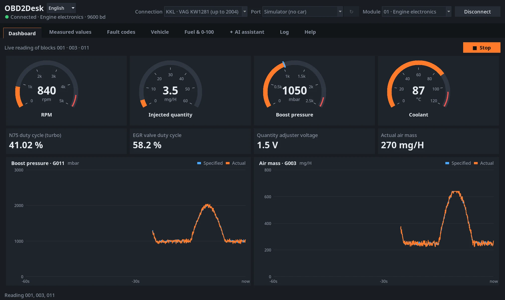
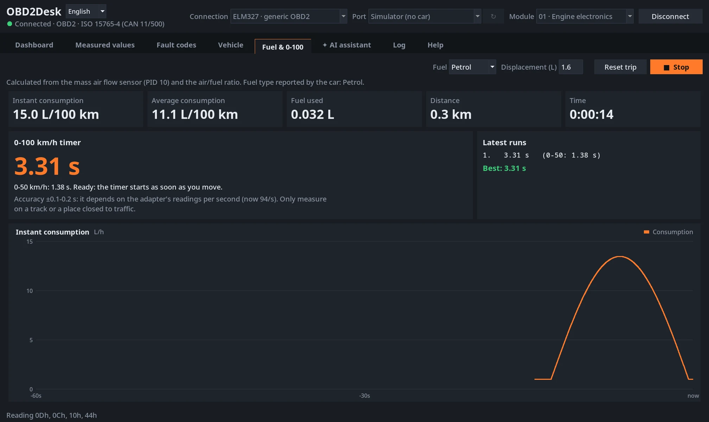
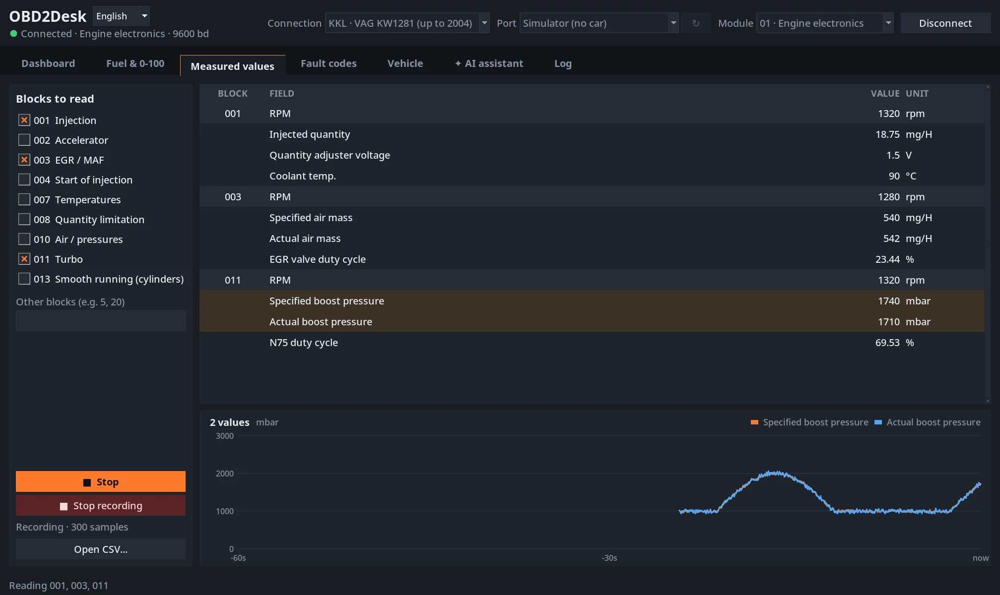
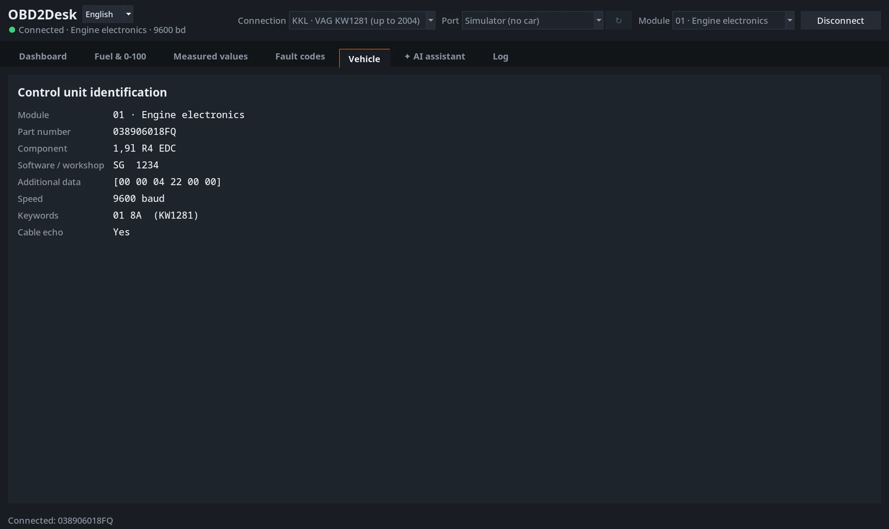
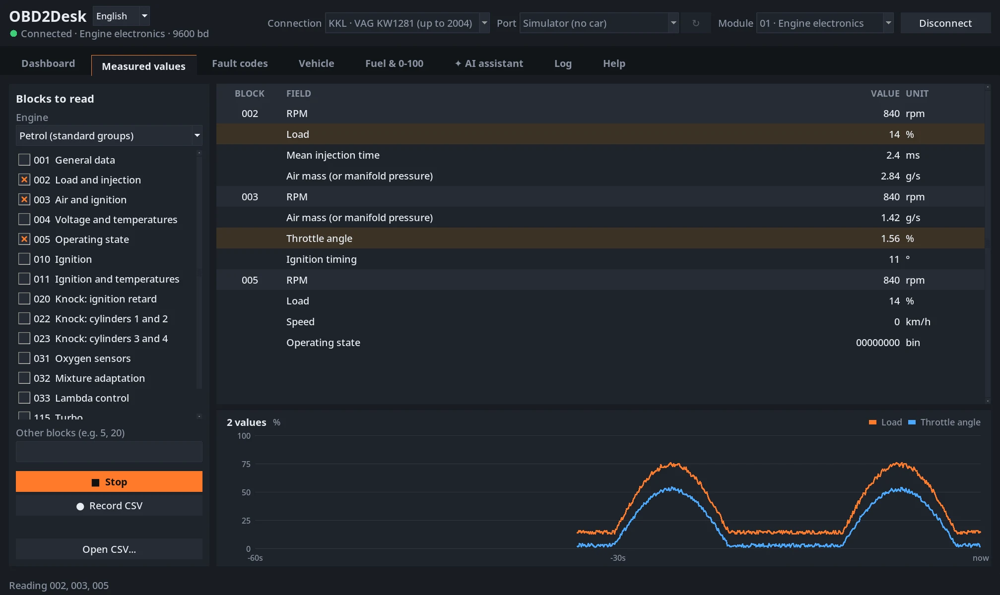
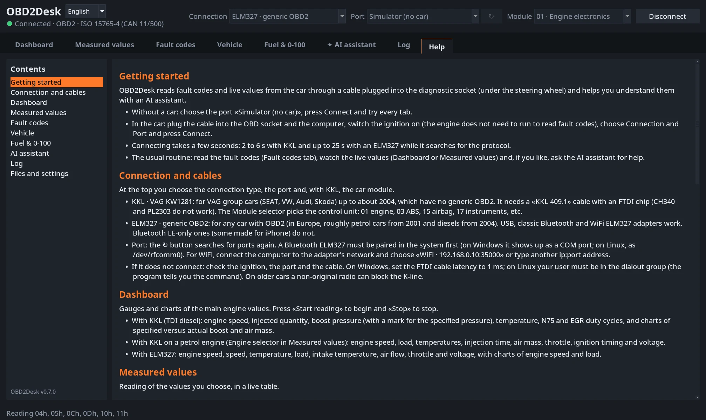
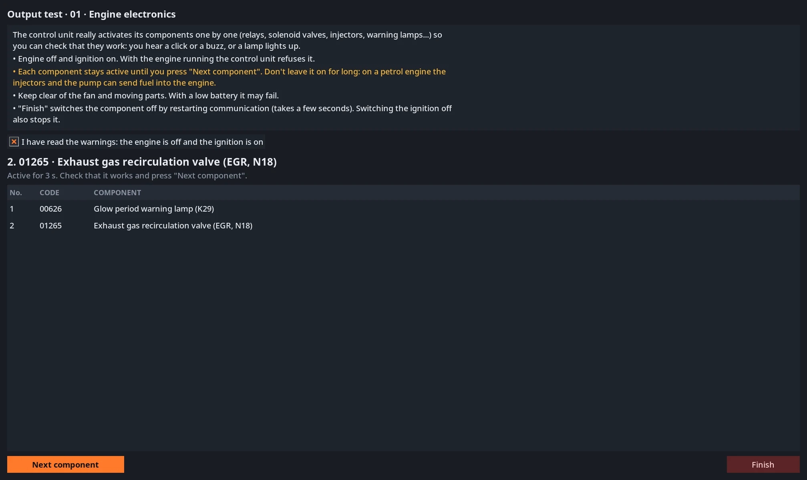
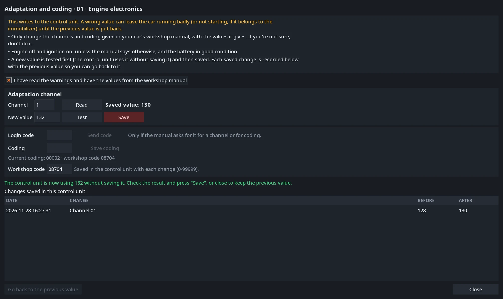

Free · Open source (MIT) · Windows and Linux
Diagnose your car
from your laptop
Fault codes, live values and an AI assistant that runs the checks for you. For older VAG cars with a KKL cable and for any car with OBD2.


Older VAG cars via KKL
Speaks KW1281, the protocol used by SEAT, VW, Audi and Skoda up to ~2004, which a regular OBD2 reader does not understand. With the measuring blocks of distributor-pump and unit-injector TDIs and of petrol engines, and it scans every module (engine, ABS, airbag, instrument cluster…) in one go.
Any OBD2 car with an ELM327
With a USB, Bluetooth or WiFi ELM327 it reads P0xxx codes (including pending and permanent), freeze frame data, readiness monitors for the emissions test, the VIN and dozens of live values from any OBD2/EOBD car. If automatic detection fails, it tries the K-line protocols (KWP2000 and ISO 9141) of pre-CAN cars one by one.
An assistant that checks
Describe the symptom: the AI reads the fault codes and values itself, asks you to start the engine or rev it, and gives you a reasoned diagnosis.
- 21VAG control units via KKL cable
- 631described VAG fault codes
- 50live OBD2 values
- 36named VAG measuring blocks for 3 engine types
- 3AI providers
- 2languages: English and Spanish
Everything it does
Live dashboard
Gauges and charts of the last 60 seconds. With the KKL cable you see RPM, injected quantity, actual vs. specified boost pressure, air mass, and N75 and EGR duty cycle; on a petrol VAG, load, throttle, ignition timing and injection time. With an ELM327: RPM, speed, temperatures, load, MAF, throttle and voltage.
Fuel consumption and 0-100 timer
Instant and average consumption in L/100 km, litres used, distance and trip time, with a chart. It uses the fuel rate reported by the control unit if available; otherwise it calculates it from the mass air flow sensor or, on cars without one, from manifold pressure and engine displacement. It detects by itself whether the car runs on petrol or diesel.
0-100 km/h timer, which also gives you your 0-50 time. No need to press anything as you pull away: with the car stopped it waits, starts counting as soon as the car moves and stops by itself at 100. It keeps your latest runs and your best time. Only measure on a track or a place closed to traffic.
With the KKL cable, on a TDI it calculates consumption in L/h from the injected quantity (that control unit does not report road speed, so there is no 0-100 there); on a petrol VAG, consumption in L/100 km, distance and 0-100 from the control unit's air mass and speed.


Measuring blocks, graphs and logging
Pick VAG measuring blocks (001 injection, 003 MAF and EGR, 011 boost…), with each value named for the engine: TDI distributor pump, TDI unit injector (PD) or petrol. Or the OBD2 PIDs your car supports, and watch them in a live table. Click a row (Ctrl+click, up to four) to see it in a live graph with the last minute.
CSV logging saves every reading with a timestamp. Open it later in the program's own CSV viewer: hover to see the values, drag to zoom into a section and check the minimum, average and maximum. It also opens in Excel or LibreOffice.


Fault codes
5-digit VAG codes with the component, the fault type and whether it is intermittent; also the 16xxx-18xxx codes of OBD-era VAG cars, translated to their P code, with over 500 VAG-specific P1 codes described (also when read over OBD2). Scan all modules goes through engine, gearbox, ABS, airbag, instrument cluster, comfort… and lists the faults in each one.
On OBD2: stored, pending and permanent codes, the MIL status and freeze frame data: RPM, temperature, load and other engine values at the exact moment the fault was set.
You can clear them (it always asks for confirmation) and generate a report to print or save as PDF, handy for the workshop or when selling the car. Remember: clearing a code does not fix the fault.
What does a code mean? Look it up in the list of OBD2 codes, valid for any make, or in the list of VAG fault codes.

History of each car
Every fault code reading, clearing and scan is saved automatically, car by car (it recognises the car by its VIN or its control unit). When you read the fault codes it tells you what has changed since last time: the new ones, the ones no longer present and the ones still present.
In History you can go through every diagnosis of each car, even when it is not connected. That way you know whether a fault came back after clearing it or has been there for a long time.

Vehicle info, other modules and emissions
Control unit identification (part number, software, coding). With the KKL cable you can access around twenty control units: gearbox, ABS, Climatronic, airbag, instrument cluster, immobiliser, comfort, radio…
On OBD2: the decoded VIN (manufacturer, country, year and model), ECU calibration, battery voltage and the readiness monitors: which emissions self-tests are complete, exactly what the inspection checks.


VAG diesel and petrol
Every VAG control unit gives its measured values in blocks of four, and what each field means depends on the engine. OBD2Desk includes the usual blocks of three engine types, with the name of every value:
- TDI distributor pump (Bosch EDC15V, like the 90 and 110 hp 1.9 TDI): injection, boost, MAF and EGR, start of injection, quantity limits.
- TDI unit injector (PD): also injection time, the status and switching of each unit injector, and the pedals.
- Petrol: load, ignition and timing, knock per cylinder, lambda probes, mixture adaptation and boost.
When you connect, the program recognises the engine from the control unit identification and picks it for you. On a petrol engine the Dashboard shows its own gauges and the fuel tab calculates L/100 km and times the 0-100 using the control unit's road speed.


Built-in manual
The Help tab explains every part of the program: which cable to use and how to connect it, what each tab shows, how fuel consumption is calculated, what the AI assistant does with your data and where recordings, reports and history are saved.
It is in English and Spanish, like the rest of the program, and works offline.


Output tests and basic settings
With the KKL cable, OBD2Desk no longer only reads: it can also ask the control unit to activate its components or to enter basic settings.
- Output test: the control unit activates its relays, solenoid valves, injectors and warning lamps one by one so you can check that they work (you hear the click or the lamp lights up). Each one stays active until you move to the next.
- Basic settings: start of injection (pump timing) and EGR off on the TDI, throttle body adaptation and idle setting on petrol engines, or any block from the workshop manual, with its values live.
Before starting, each window explains the conditions (engine off, ignition on…) and asks you to confirm them. Tested with the simulators and on a car.


Adaptation and coding New
With the KKL cable you can read and change the adaptation channels and the coding of the control unit, with the values from your car's workshop manual.
- Test first, then save: the control unit uses the new value without saving it so you can check the result; if you close without saving, it goes back to the previous one.
- With a safety net: each change asks for confirmation and is recorded with the previous value; "Go back to the previous value" restores it.
- Login code for the channels that need it, and workshop code.
It writes to the control unit: only use it with the values from the manual. Tested with the simulators and on a car.


- Built-in help: a tab with the manual for every part of the program.
- Built-in simulator: try everything without a car by choosing the port “Simulator (no car)”.
- A single file: no need to install Python or anything else.
- Full communication log, with a debug mode, in case something goes wrong.
- Stable session: keeps the KW1281 connection alive and warns you if it drops.
- Diagnostic report in HTML, ready to print or save as PDF, with the comparison with the previous diagnosis.
- Update notice on start-up when a new version is out.
- English and Spanish: switch the language from the selector next to the program name.
What you can do with each cable
The KKL cable speaks the proprietary protocol of older VAG cars and reaches all their control units; the ELM327 speaks OBD2, the emissions standard every modern car has. This is what OBD2Desk does with each one.
| Feature | KKL cable · VAG KW1281 | ELM327 · OBD2 |
|---|---|---|
| Read and clear fault codes | Yes. 5-digit VAG codes, with fault type and intermittent flag | Yes. stored, pending and permanent; VAG P1 codes described |
| Scan every control unit | Yes. 21 addresses: engine, ABS, airbag, instrument cluster, comfort… | No |
| Freeze frame data | No | Yes. |
| Readiness monitors (emissions test) | No | Yes. |
| Identification | Yes. control unit part number, software and coding | Yes. decoded VIN, calibration (CALID/CVN) and voltage |
| Dashboard with gauges and charts | Yes. TDI and petrol | Yes. |
| Measured values in a table and graph | Yes. blocks, named for the engine | Yes. up to 50 PIDs, those the car supports |
| CSV logging and recording viewer | Yes. | Yes. |
| Trip fuel consumption | Yes. TDI in L/h; petrol in L/100 km | Yes. L/100 km |
| 0-100 km/h timer | Yes. petrol (the TDI does not report road speed) | Yes. |
| History of each car | Yes. | Yes. |
| Report to print or save as PDF | Yes. | Yes. |
| AI assistant with guided diagnosis | Yes. | Yes. |
| Simulator to try it without a car | Yes. | Yes. |
| Output tests and basic settings | Yes. components one by one; throttle, pump timing, EGR… | No |
| Adaptation channels and coding | Yes. test before saving, login and a log to go back | No |
AI assistant: guided diagnosis
Not a chatbot that guesses: the assistant uses the program to test its hypotheses against your car's data.
- 1
Tell it what's wrong
“It lacks power when accelerating and blows black smoke.” Or press Analyse vehicle faults.
- 2
It checks on its own
It reads the fault codes, checks the history to see whether they are new or have appeared before, and reads or records the relevant blocks or PIDs during a rev or while the engine warms up.
- 3
It asks for help when needed
“Start the engine and give it a rev in neutral.” You press Done or I can't and it carries on.
- 4
Reasoned diagnosis
Causes ranked by probability with the evidence, what to do from cheapest to most expensive, and whether the car is safe to drive. If you ask, it leaves the report ready to print with its diagnosis.
What the assistant can do
- Read the fault codes from the control unit, with freeze frame data and monitors on OBD2.
- Read live values (boost pressure, air mass, temperatures…), once or several times in a row to see how they change, for example during a rev.
- Record values for up to 2 minutes (for example, while the engine warms up) and analyse the minimum, average and maximum. The recording is saved as a CSV you can open yourself in the viewer.
- Check the car's history: which fault codes are new, which came back after clearing and which have been there for a long time.
- Generate the report with its diagnosis included, ready to print or save as PDF and take to the workshop.
- Ask you to do something (start the engine, hold 2500 rpm, look at a hose) and wait until you have done it.
- Clear the fault codes, always with your confirmation, and check which ones come back.
- Look at the program log if the connection fails, to tell you what is going on.


Screenshots taken with the simulator. The readings and the action window are real; the diagnosis text is an example of how it responds.
Providers
Claude by Anthropic (default), OpenAI or DeepSeek. The model can be changed.
Cost
You pay for usage directly to the provider; the program is free. With Claude, a question costs cents and a guided diagnosis of about 10 checks is roughly €0.05 to €0.20.
Privacy
When analysing, the vehicle data (including the VIN), fault codes, measured values and, if you ask, the program log are sent to the provider you choose. Your key is stored only on your computer.
Which cable you need
It depends on the car. If it is a VAG car from before 2004 (especially diesels), you almost certainly need the KKL cable: many of them don't answer generic OBD2 even though they have the connector.
VAG up to ~2004 · KW1281
KKL VAG-COM 409.1 cable with FTDI chip
USB, around €10-20. Connects to the K-line (pin 7) of the diagnostic connector.
- FTDI FT232RL/FT232RQ chip. On Windows, the hardware ID should be
VID_0403&PID_6001. - Cables with a 4-position switch (Fiat ECU Scan) work: use position 1 for VAG.
- Avoid CH340/CH341 (
VID_1A86) and PL2303 chips: they can't do the 5-baud init properly. - ELM327 adapters with an HS-CAN/MS-CAN switch (meant for Ford) won't work, and the “K+CAN Commander” is not recommended.
- Fake FTDI chips exist: if the port shows up but doesn't communicate, try an older driver.
Any car with OBD2/EOBD
ELM327 adapter (USB, Bluetooth or WiFi)
In Europe, petrol cars from 2001 and diesels from 2003-2004. Available for under €15.
- USB or classic Bluetooth: pair it in the operating system and it shows up as a COM port (Windows) or
/dev/rfcomm0(Linux). - WiFi: connect the laptop to the adapter's WiFi network and choose the port “WiFi · 192.168.0.10:35000” (or type its address if different).
- Many clones claim “v2.1” but are incomplete v1.0; the program is built to work with them.
- BLE-only ELM327 adapters (some made for iPhone) don't work: they don't create a serial port.
- The ELM327 can't do KW1281: for an older VAG car you need the KKL cable.
The diagnostic connector is usually under the dashboard on the driver's side. An aftermarket radio can block the K-line: if it won't connect, unplug the radio to test. More details in the guide KKL 409.1 cable: how to choose one that works.
Connecting a Bluetooth ELM327: pair it and choose its COM port
A Bluetooth ELM327 works like a wireless serial cable. When you pair it, the system creates a virtual serial port (a COM port on Windows, /dev/rfcomm0 on Linux) and the program talks to it just like a USB adapter. That's why in OBD2Desk you don't look for “Bluetooth”: you choose that port. Two steps: first pair it in the system, then connect from the program.
Windows 10 and 11
- Plug the ELM327 into the car and switch on the ignition: its light comes on.
- In Settings → Bluetooth & devices → Add device → Bluetooth, choose the adapter (usually called OBDII, OBD2 or V-LINK). If it asks for a PIN, try
1234,0000or6789. - Check which port it got: More Bluetooth settings → COM Ports tab, the one with direction Outgoing (for example, COM5). It also appears in Device Manager → Ports (COM & LPT) as “Standard Serial over Bluetooth link”.
- In the program: Connection ELM327, Port that COM, and Connect. The program usually preselects it.
It's normal for Windows to show it as “Paired” rather than “Connected”: the connection opens when you press Connect in the program. If there are two COM ports and one doesn't respond, try the other.
Linux
- Plug in the ELM327 and switch on the ignition.
- Pair it from your desktop's Bluetooth settings or with
bluetoothctl:scan on,pair AA:BB:CC:DD:EE:FFandtrust AA:BB:CC:DD:EE:FF(use the MAC address shown in the scan). - Linux doesn't create the port by itself. Create it with
sudo rfcomm bind 0 AA:BB:CC:DD:EE:FFand you'll get/dev/rfcomm0. Repeat this after each reboot. - In the program: Connection ELM327, Port
/dev/rfcomm0and Connect.
If you don't have the rfcomm command: on Fedora install bluez-deprecated; on Arch, bluez-deprecated-tools. On Debian, Ubuntu and Mint it comes with bluez.
An ELM327 accepts only one connection at a time: if you've used it with your phone (Torque, Car Scanner…), close that app or turn off the phone's Bluetooth before connecting from the computer. Full guide, with WiFi and common problems: Connect a Bluetooth or WiFi ELM327.
Compatible cars and control units
Everything below comes straight from the program's own tables.
KKL cable · KW1281
SEAT, Volkswagen, Audi and Skoda up to ~2004
VAG cars using the KW1281 protocol, especially those built before OBD2 became mandatory for diesels. If a control unit speaks the newer protocol (KWP2000), the program detects it and tells you: use an ELM327 then.
The 21 control units it can read and scan:
01Engine electronics02Automatic gearbox03ABS08Climatronic09Central electronics21Airbag22Steering column23Instrument cluster25Gateway (data bus)34All-wheel drive (Haldex)37Immobiliser53Central locking54Driver seat memory55Navigation69Alarm / interior monitoring70Central comfort module85Headlights (range / xenon)86Radio101Tyre pressure118Parking aid119Telephone
ELM327 · OBD2 / EOBD
Any make with OBD2
In Europe, petrol cars from 2001 and diesels from 2003-2004; in the USA, from 1996. It finds the protocol by itself (CAN, KWP2000, ISO 9141 or J1850, depending on the adapter) and, if that fails, tries the K-line ones one by one.
- The 107 most common generic (P0) fault codes with their description, plus the 538 VAG P1 codes if the VIN belongs to a SEAT, VW, Audi or Skoda.
- Decoded VIN for 64 manufacturers, with the model for VAG cars.
The 50 OBD2 values it can read
- Engine load
- Coolant temp.
- Short-term fuel trim B1
- Long-term fuel trim B1
- Short-term fuel trim B2
- Long-term fuel trim B2
- Fuel pressure
- Manifold pressure (MAP)
- Engine speed
- Speed
- Ignition advance
- Intake air temp.
- Air flow (MAF)
- Throttle position
- O2 sensor B1S1
- O2 sensor B1S2
- O2 sensor B1S3
- O2 sensor B1S4
- O2 sensor B2S1
- O2 sensor B2S2
- Time since start
- Distance with MIL on
- Rail pressure (rel. vacuum)
- Fuel rail pressure
- Lambda sensor B1S1 (wideband)
- Commanded EGR
- EGR error
- Commanded EVAP purge
- Fuel level
- Warm-ups since codes cleared
- Distance since codes cleared
- Barometric pressure
- Lambda sensor B1S1 (current)
- Catalyst temp. B1S1
- Catalyst temp. B2S1
- Control module voltage
- Absolute load
- Commanded lambda
- Relative throttle
- Ambient temp.
- Absolute throttle B
- Accelerator pedal D
- Accelerator pedal E
- Commanded throttle actuator
- Time with MIL on
- Time since codes cleared
- Ethanol in fuel
- Relative accelerator pedal
- Oil temp.
- Fuel consumption
VAG measuring blocks by engine type
For guidance: the names may vary between control units. The program calculates the units with the formula sent by the control unit itself, so blocks that are not on the list can be read as well.
TDI distributor pump (EDC15V) · 9 blocks
| Block | What it shows |
|---|---|
| 001 | Injection RPM · Injected quantity · Quantity adjuster voltage · Coolant temp. |
| 002 | Accelerator RPM · Accelerator pedal · Operating state · Coolant temp. |
| 003 | EGR / MAF RPM · Specified air mass · Actual air mass · EGR valve duty cycle |
| 004 | Start of injection RPM · Specified start of injection · Actual start of injection · Valve duty cycle |
| 007 | Temperatures Fuel temp. · Value 2 · Value 3 · Coolant temp. |
| 008 | Quantity limitation RPM · Requested quantity · Limitation by RPM · Limitation by air mass |
| 010 | Air / pressures Air mass · Atmospheric pressure · Manifold pressure · Accelerator pedal |
| 011 | Turbo RPM · Specified boost pressure · Actual boost pressure · N75 duty cycle |
| 013 | Smooth running (cylinders) Cylinder 1 · Cylinder 2 · Cylinder 3 · Cylinder 4 |
TDI unit injector (PD) · 12 blocks
| Block | What it shows |
|---|---|
| 001 | Injection RPM · Injected quantity · Specified injection time · Coolant temp. |
| 002 | Accelerator RPM · Accelerator pedal · Operating state · Coolant temp. |
| 003 | EGR / MAF RPM · Specified air mass · Actual air mass · EGR valve duty cycle |
| 004 | Unit injectors RPM · Specified start of injection · Actual injection time · Synchronisation angle |
| 006 | Pedals and cruise control Speed · Brake and clutch switches · Accelerator pedal · Cruise control |
| 007 | Temperatures Fuel temp. · Value 2 · Intake manifold temp. · Coolant temp. |
| 008 | Quantity limitation RPM · Requested quantity · Limitation during gear change · Smoke limitation |
| 010 | Air / pressures Air mass · Atmospheric pressure · Manifold pressure · Accelerator pedal |
| 011 | Turbo RPM · Specified boost pressure · Actual boost pressure · N75 duty cycle |
| 013 | Smooth running (cylinders) Cylinder 1 · Cylinder 2 · Cylinder 3 · Cylinder 4 |
| 018 | Unit injector status Injector 1 · Injector 2 · Injector 3 · Injector 4 |
| 023 | Unit injector switching time Cylinder 1 · Cylinder 2 · Cylinder 3 · Cylinder 4 |
Petrol (standard groups) · 15 blocks
| Block | What it shows |
|---|---|
| 001 | General data RPM · Coolant temp. · Lambda control · Basic setting conditions (or lambda bank 2) |
| 002 | Load and injection RPM · Load · Mean injection time · Air mass (or manifold pressure) |
| 003 | Air and ignition RPM · Air mass (or manifold pressure) · Throttle angle · Ignition timing |
| 004 | Voltage and temperatures RPM · Voltage · Coolant temp. · Intake air temp. |
| 005 | Operating state RPM · Load · Speed · Operating state |
| 010 | Ignition RPM · Load · Throttle angle · Ignition timing |
| 011 | Ignition and temperatures RPM · Coolant temp. · Intake air temp. · Ignition timing |
| 020 | Knock: ignition retard Cylinder 1 · Cylinder 2 · Cylinder 3 · Cylinder 4 |
| 022 | Knock: cylinders 1 and 2 RPM · Load · Retard cylinder 1 · Retard cylinder 2 |
| 023 | Knock: cylinders 3 and 4 RPM · Load · Retard cylinder 3 · Retard cylinder 4 |
| 031 | Oxygen sensors Bank 1, sensor 1 · Bank 1, sensor 2 · Bank 2, sensor 1 · Bank 2, sensor 2 |
| 032 | Mixture adaptation Bank 1, idle · Bank 1, part load · Bank 2, idle · Bank 2, part load |
| 033 | Lambda control Lambda control bank 1 · Sensor voltage bank 1 · Lambda control bank 2 · Sensor voltage bank 2 |
| 115 | Turbo RPM · Load · Specified boost pressure · Actual boost pressure |
| 118 | Boost: valve and temperature RPM · Intake air temp. · Boost control valve duty cycle · Pressure before throttle |
Download and install
Free and open source. Every version is on GitHub Releases.
Windows 10 and 11 (64-bit)
Download .exe- Download it and run it; nothing to install.
- Windows SmartScreen will warn you the first time because it isn't signed: More info → Run anyway.
- FTDI cable: set the latency to 1 ms in Device Manager → Ports → USB Serial Port → Properties → Port Settings → Advanced → Latency Timer. This prevents communication drops.
Linux (64-bit)
.tar.gz packageUbuntu 20.04+, Debian 11+, Linux Mint 20+, Fedora, openSUSE, Arch…
tar xzf OBD2Desk-*-linux-x86_64.tar.gz
cd OBD2Desk
./instalar.sh
sudo usermod -aG dialout $USER- The installer adds it to the applications menu, without sudo.
./instalar.sh --uninstallremoves it. If you had the previous version (Toledo Diagnosis), it replaces it and keeps your settings. - The last command gives you permission to use the cable (on Arch the group is
uucp). Log out and back in. - Bluetooth ELM327: pair it and bind it with
sudo rfcomm bind 0 AA:BB:CC:DD:EE:FF.
Prefer the source code? With Python 3.10+ and tkinter: pip install -r requirements.txt and python gui.py. Instructions in the README.
Getting started
- 1
Try it without a car
Choose the port “Simulator (no car)”, press Connect and, in the Dashboard tab, Start reading.
- 2
Connect to the car
Ignition on (to read fault codes the engine can be off). Plug the cable into the OBD connector and the laptop, choose Connection and Port and press Connect (for Bluetooth, first pair it and find its COM port). With KKL it takes 2 to 6 s; with an ELM327, up to 25 s (up to a minute if it has to try the K-line protocols).
- 3
Read the fault codes
Fault codes tab → Read fault codes; on an older VAG car, Scan all modules to check the whole car. Save them with Generate report before clearing anything.
- 4
Watch the values
Dashboard for a quick look; Measured values to pick blocks or PIDs, graph them and record a CSV; Fuel & 0-100 for the trip.
- 5
Ask the AI for help
In ✦ AI assistant, save your key, describe the problem and let it run the checks.
Which blocks should I look at?
In Measured values, choose your engine type under Engine and tick the blocks. To start with: 001 (injection) and 011 (boost) on a TDI, and 002 (load) and 003 (air and ignition) on a petrol engine.
The full list for every engine is in Compatible cars and control units, and what to check for each symptom in the guide 1.9 TDI measuring blocks.
Troubleshooting
Won't connect with the KKL cable (“No 0x55 sync byte”)
Check that the ignition is on and the port is correct. Make sure the cable has an FTDI chip and not a CH340, that it isn't a fake FTDI and, if it has a switch, that it's in position 1. An aftermarket radio can block the K-line: unplug it to test.
It says “Keywords KWP2000”
The control unit doesn't speak KW1281 but KWP2000. Try an ELM327 in OBD2 mode.
The KKL session drops
On Windows, set the FTDI port latency to 1 ms (see Download). On Linux the program adjusts it automatically.
ELM327: “the vehicle does not respond to OBD2”
Switch on the ignition. If it's a VAG car from before 2004, it probably doesn't have generic OBD2: you need the KKL cable.
ELM327: older car with an OBD2 connector that won't connect (e.g. Mercedes)
Pre-CAN cars (roughly up to 2005-2007) speak OBD2 over the K-line, and with some cars and adapters the ELM327's automatic search can't find the protocol. That's why the program then tries KWP2000 (fast and slow init) and ISO 9141 one by one, and the Log tab shows which one worked. If it still doesn't respond, the car may not be OBD2-compliant despite having the connector (in Europe it's mandatory from 2001 for petrol and 2004 for diesel; many older Mercedes only answer the brand's own tools), or the adapter may be a cheap clone that doesn't handle the K-line well.
I can't find the Bluetooth ELM327's port
You don't choose Bluetooth directly: when you pair it, the system creates a serial port and that's what you select (step by step). On Windows, pairing creates two COM ports: if one doesn't work, try the other. On Linux you have to bind it with sudo rfcomm bind 0 <MAC> and choose /dev/rfcomm0.
How do I connect a WiFi ELM327?
The adapter creates its own WiFi network (usually called “WiFi_OBDII”, “OBDII” or “V-LINK”). Connect the laptop to that network, choose Connection ELM327 and, in Port, “WiFi · 192.168.0.10:35000”. If your adapter uses another address (for example 192.168.1.10), type it in the port field as ip:port. While connected to its network you won't have internet, so the AI assistant won't work at the same time.
Linux: “Permission denied” when connecting
Your user must be in the serial port group: sudo usermod -aG dialout $USER (on Arch, uucp) and log in again. The program itself tells you the exact command.
Linux (Ubuntu/Mint): the cable doesn't show up as /dev/ttyUSB0
The brltty service (for braille displays) grabs many USB-serial adapters. If you don't use it: sudo apt remove brltty.
The assistant says “Invalid API key”, “no credit” or “model not found”
Check the key and billing on the provider's website. If the model doesn't exist, change its name in the AI settings.
Windows warns that the program isn't safe
That's SmartScreen: the executable isn't digitally signed. Click More info → Run anyway. The source code is public on GitHub.
What's new in each version
What has been added to OBD2Desk over time. Full details of every version are on GitHub Releases.
v0.8.1
- In the adaptation window, the "Go back to the previous value" button is no longer cut off in English.
v0.8.0
- Adaptation channels (KKL cable): read, test and save values, with a login code if the channel needs it.
- Coding (KKL cable): view and change the coding of the control unit; Vehicle shows the coding and the workshop code.
- Each change asks for confirmation and is recorded with the previous value so you can go back to it.
v0.7.0
- Output test (KKL cable): the control unit activates its components one by one so you can check that they work.
- Basic settings (KKL cable): throttle body adaptation, start of injection, EGR off or any block, with live values.
- Both features ask you to confirm the conditions before starting and, while they run, the AI assistant cannot use the control unit.
v0.6.1
- In Measured values, the block list scrolls with the mouse wheel when it does not fit in the window (with the 15 petrol blocks, "Open CSV..." was hidden on small screens).
v0.6.0
- Help tab with the manual for every part of the program.
- 538 VAG P1 fault codes described (previously 21), also when read with an ELM327 on a VAG car.
- Engine selector in Measured values: TDI distributor pump, TDI unit injector or petrol, with the usual blocks and the name of every value. Chosen automatically when you connect.
- Petrol VAG via KKL: its own Dashboard, consumption in L/100 km, distance and 0-100 timer.
v0.5.0
- Fuel & 0-100 tab: instant and average consumption, litres, distance and a 0-100 km/h timer with the 50 km/h split.
- Live graph of any value and a CSV viewer with zoom and minimum, average and maximum.
- History of each car: which fault codes are new, which are gone and which keep coming back.
- The AI assistant can record values, check the history and generate the report.
v0.4.0
- Toledo Diagnosis is renamed OBD2Desk.
- Interface, report and fault code descriptions in English; the AI assistant answers in the chosen language.
- Your settings, API keys included, are kept when you upgrade.
v0.3.0
- Scan of every VAG module and a much larger VAG fault code table.
- On OBD2: freeze frame data, permanent codes, readiness monitors, decoded VIN and calibration.
- Diagnostic report to print or save as PDF, WiFi ELM327 and new version notice.
v0.2.0
- Linux version (Ubuntu, Debian, Mint, Fedora, openSUSE, Arch).
- ELM327: tries the K-line protocols of pre-CAN cars one by one.
v0.1.0
- First version: KKL cable for VAG and ELM327 for OBD2, Dashboard, measured values with CSV logging, AI assistant and simulator.